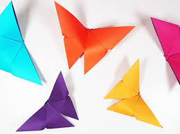
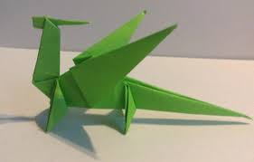
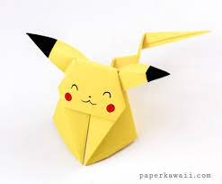
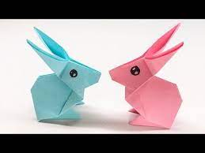
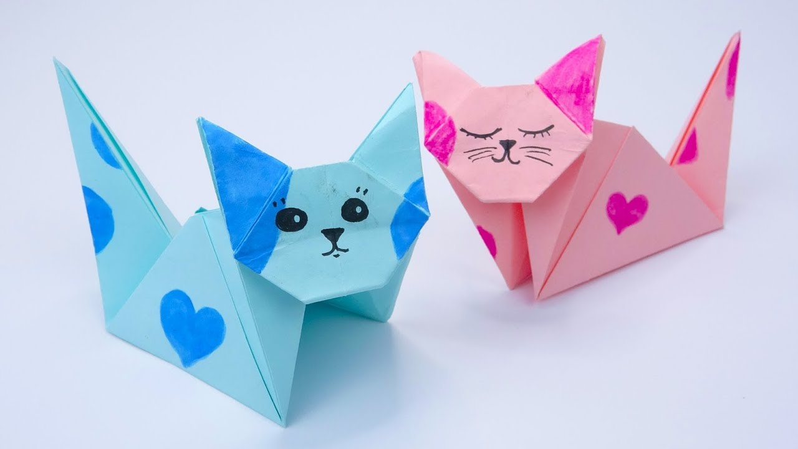
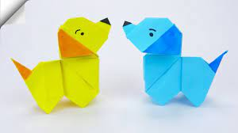

welcome to my origami page
this was my first ever origami

fun fact about butterflies.
Butterflies Taste With Their Feet.
there are almost 20,000 types of butterflies
this was my second origami

fun facts about dragons
there are some dragons that cant even fly
there are more than 2000 dragon tales and legends.
this is my favourite origami

what kind of pokemon is he?
pikachu is a electric type pokemon
ash's first pokemon was also a pikachu.
this is one of my origamis

fun facts about rabbits
they can find thier way back even in the dences of grasss
rabbits teeth never stop growing
this is one of my origamis

they can give birth to upto 5 kitten at one time
they lick themselves to clean them selves
there more than 40 breeds of cats
this is one of my origamis

dogs are the most loyal animals
they are very smart
my fav breeds are golden retrivers and german shephards